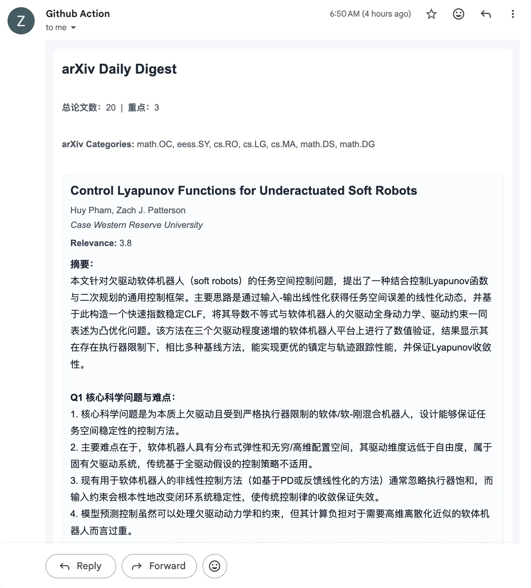

zotero-arxiv-daily：fork 与工作流梳理
这篇 note 记录这个 fork 的背景与主要调整。重点不放在“怎么安装”，而放在“它在研究日常里到底解决什么问题”和“这一版如何贴近自己的流程”。
原作者把“每日追踪前沿论文”做成了一个几乎零运维的 GitHub Actions 流水线，这件事本身就很有价值。它让文献追踪从一件需要额外分配精力的事，变成了一个稳定、低成本、可预期的日常入口。
我的 fork 不是重写，而是在这个开源基础上做个人适配：更贴近自己的研究方向、更偏中文研究导读、更重视邮件可读性与发送链路稳定性。
1. 目标与边界
如果把这个项目抽象成一句话，它做的是：
用 Zotero 历史语料近似表示当前研究兴趣，再从每日新增 arXiv 论文里筛出高相关候选，最后生成一封可以直接扫读的邮件摘要。
它的输入、输出和约束可以压缩成下面三点：
- 输入：Zotero 文献库 + 每日 arXiv 新论文。
- 输出：排序后的候选论文、中文摘要，以及最终邮件。
- 约束：GitHub Actions 上可运行，维护成本低，失败时容易定位。
2. 端到端数据流
Zotero corpus -> category inference -> arXiv fetch ->
deduplicate + rerank -> top-k full-text enrich ->
TL;DR / Q1 / Q2 -> email render ->
SMTP / Actions
其中 top-k 走全文增强，其余候选保持 abstract-only summary。
fork 中几处改动，主要落在类别选择、Top-K 全文增强、邮件渲染和发送可靠性这几层。
3. 项目结构
下面列出主链路相关的主要目录与文件。
zotero-arxiv-daily/
├─ .github/
│ └─ workflows/
│ ├─ main.yml # 每日主任务；fork 默认直接读取 committed config
│ ├─ test-email.yml # 新增：手动发送真实测试邮件
│ ├─ test.yml # 调试/测试任务
│ └─ ci.yml # 基础 CI
├─ config/
│ ├─ base.yaml # 配置基线：类别、摘要、SMTP、执行参数
│ └─ custom.yaml # 个人研究画像与默认运行参数
├─ src/
│ └─ zotero_arxiv_daily/
│ ├─ main.py # 入口
│ ├─ executor.py # 主调度：抓取、推断、重排、摘要、发送
│ ├─ protocol.py # Paper / CorpusPaper 与摘要逻辑
│ ├─ construct_email.py # 邮件 HTML 组装
│ ├─ utils.py # SMTP、HTML/PDF 文本抽取等工具
│ ├─ retriever/
│ │ └─ arxiv_retriever.py # arXiv 拉取与 code url 抽取
│ └─ reranker/
│ └─ local.py # 本地 embedding rerank
└─ tests/
└─ test_email.py # 邮件链路相关测试| 目录/文件 | 作用 |
|---|---|
.github/workflows/ |
定义任务什么时候跑、读取什么配置、如何测试发送链路。 |
config/ |
定义研究画像、类别兜底、摘要语言、SMTP 参数。 |
executor.py |
串起整个 E2E pipeline。 |
construct_email.py / utils.py |
决定最终邮件长什么样，以及能否稳定发出去。 |
4. 主要修改
| 位置 | 调整 | 文件 |
|---|---|---|
| 配置回退 |
主 workflow 不再强依赖 repo variable CUSTOM_CONFIG。变量为空时，直接回退到仓库里的 config/custom.yaml。
|
.github/workflows/main.yml.github/workflows/test.yml
|
| 手动邮件测试 | 新增 test-email.yml，把“只测真实发送链路”从日常任务里拆出来。 |
.github/workflows/test-email.yml |
| 类别推断与兜底 |
增加 interest_profile、required_categories、
auto_category_from_zotero，在未显式给定类别时，从 Zotero 语料自动推断，并保留一组兜底类别。
|
config/base.yamlconfig/custom.yamlexecutor.pyarxiv_retriever.py
|
| Top-K 全文增强 | 不是对所有论文都做全文抽取，而是只对排序靠前的候选做 HTML/PDF enrich，然后再生成更深的总结。 | executor.pyprotocol.py |
| 中文研究导读 |
在 full-text 模式下输出 TL;DR + Q1 + Q2，而不是只给一句话摘要；并把默认语言切到中文。
|
protocol.pyconfig/custom.yaml |
| 邮件输出层 | 重写邮件 HTML 结构，支持更稳定的标题/作者/机构/摘要布局；同时从 arXiv 元信息中尽量抽取 code URL。 | construct_email.pyarxiv_retriever.py |
| 发送可靠性 | SMTP 增加 retry，降低偶发失败直接中断的概率，并补邮件链路测试。 | utils.pytests/test_email.py |
5. 结果

6. 边界与后续
目前比较明显的边界有三点：
- 仍然以 arXiv 为主，尚未覆盖更广的期刊/数据库生态。
- 类别推断依赖启发式关键词与语料分布，不是一个严格的兴趣建模系统。
- fork 目前仍落后 upstream 10 个提交，因此长期维护上仍应坚持 upstream-first。
如果后面继续做，我更感兴趣的是：
- 把兴趣画像从 Zotero 进一步解耦，允许显式主题词、排除词、权重与时间衰减。
- 扩展多数据源，但保持“轻量日报”而不是重新变成一个搜索平台。
- 继续把个人适配控制在少数核心文件里，降低未来同步 upstream 的成本。